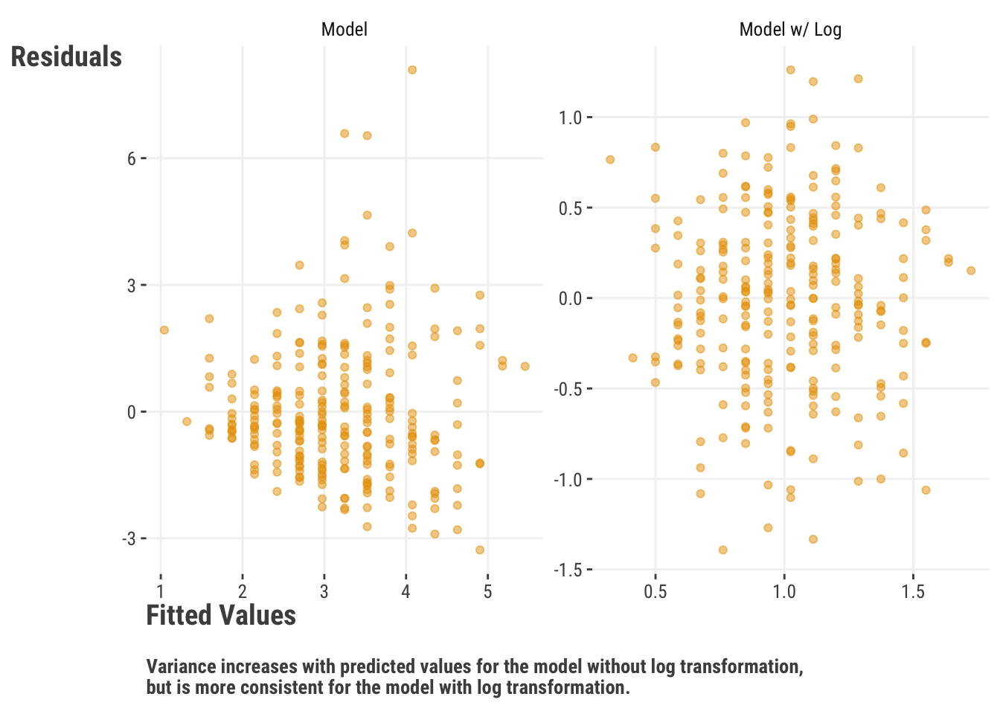
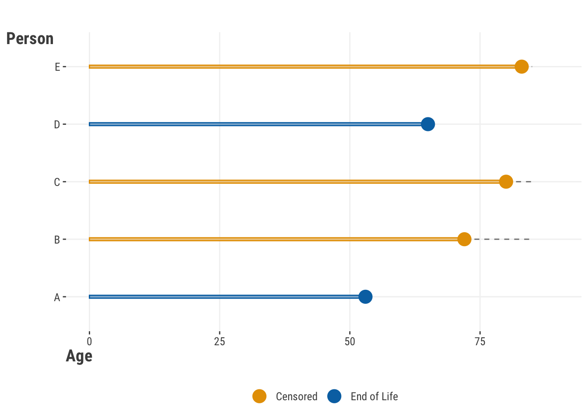

| Target | Feature | Change in X | Change in Y | Benefits |
|---|---|---|---|---|
| y | x | 1 unit | B unit | Interpretation |
| log(y) | x | 1 unit | 100 * (exp(B) -1) | Heteroscedasticity in y |
| log(y) | log(x) | 1% change | B% change | Interpretation, deal with feature extremes |
| y | scale(x) | 1 standard deviation | B unit | Interpretation, estimation |
| scale(y) | scale(x) | 1 standard deviation | B standard deviation | Interpretation, estimation |
13 Dealing with Data
It’s an inescapable fact that models need data to work. One of the dirty secrets in data science is that getting the data right will do more for your model than any fancy algorithm or hyperparameter tuning. Data is messy, and there are a lot of ways it can be messy. In addition, dealing with a target variable on its terms can lead to more interesting results. In this chapter we’ll discuss some of the most common data issues and things to consider. There’s a lot to know about data before you ever get into modeling your own, so we’ll give you some things to think about it in this chapter.
13.1 Key Ideas
- Data transformations can provide many modeling benefits.
- Label and text-based data still needs a numeric representation, and this can be accomplished in a variety of ways.
- The data type for the target may suggest a particular model, but does not necessitate one.
- The data structure, e.g. temporal, spatial, censored, etc., may suggest a particular modeling domain to use.
- Missing data can be handled in a variety of ways, and the simpler approaches are typically not great.
- Class imbalance is a very common issue in classification problems, and there are a number of ways to deal with it.
- Latent variables are everywhere!
13.1.1 Why this matters
Knowing your data is one of the most important aspects of any application of data science. It’s not just about knowing what you have, but also what you can do with it. The data you have will influence the models you can potentially use, the features you can create and manipulate, and have a say on the results you can expect.
13.1.2 Helpful context
We’re talking very generally about data here, so not much background is needed. The models mentioned are covered in other chapters, or build upon those, but we’re not doing any actual modeling here.
13.2 Feature & Target Transformations
Transforming variables from one form to another provides several benefits in modeling, whether applied to the target, features, or both, and should regularly be used for most model situations. Some of these benefits include:
- More comparable feature effects and related parameters
- Faster estimation
- Easier convergence
- Helping with heteroscedasticity
For example, just centering features, i.e. subtracting the mean, provides a more interpretable intercept that will fall within the actual range of the target variable. After centering, the intercept tells us what the value of the target variable is when the features are at their means (or reference value if categorical). Centering also puts the intercept within the expected range of the target, which often makes for easier parameter estimation. So even if easier interpretation isn’t a major concern, variable transformations can help with convergence and speed up estimation, so can always be of benefit.
13.2.1 Numeric variables
The following table shows the interpretation of some very common transformations applied to numeric variables- logging and standardizing to mean zero, standard deviation of one1.
For example, it is very common to use standardized variables, or simply ‘scaling’ them. Some also call this normalizing, as with batch or layer normalization in deep learning, but this term can mean a lot of things, so one should be clear in their communication. If \(y\) and \(x\) are both standardized, a one unit (i.e. one standard deviation) change in \(x\) leads to a \(\beta\) standard deviation change in \(y\). So, if \(\beta\) was .5, a standard deviation change in \(x\) leads to a half standard deviation change in \(y\). In general, there is nothing to lose by standardizing, so you should employ it often.
Another common transformation, particularly in machine learning, is min-max scaling. This involves changing variables to range from some minimum value to some maximum value, and usually this means zero and one respectively. This transformation can make numeric and categorical indicators more comparable, or at least put them on the same scale for estimation purposes, and so can help with convergence and speed up estimation.
When using sklearn, it’s a bit of a verbose process to do such a simple transformation. However it is beneficial when you want to do more complicated things, especially when using data pipelines.
from sklearn.preprocessing import StandardScaler, MinMaxScaler
import numpy as np
# Create a random sample of integers
data = np.random.randint(low=0, high=100, size=(5, 3))
# Apply StandardScaler
scaler = StandardScaler()
scaled_data = scaler.fit_transform(data)
# Apply MinMaxScaler
minmax_scaler = MinMaxScaler()
minmax_scaled_data = minmax_scaler.fit_transform(data)R makes it easy to do simple transformations like standardization and logs without external packages, but you can also use tools like recipes and mlr3 pipeline operations when needed to make sure your preprocessing is applied appropriately.
# Create a sample dataset
data = matrix(sample(1:100, 15), nrow = 5)
# Standardization
scaled_data = scale(data)
# Min-Max Scaling
minmax_scaled_data = apply(data, 2, function(x) {
(x - min(x)) / (max(x) - min(x))
})Using a log transformation for numeric targets and features is straightforward, and comes with several benefits. For example, it can help with heteroscedasticity, which is when the variance of the target is not constant across the range of the predictions2 (demonstrated below). It can also help to keep predictions positive after transformation, allows for interpretability gains, and more. One issue with logging is that it is not a linear transformation, which can help capture nonlinear feature-target relationships, but can also make some post-modeling transformations more less straightforward. Also if you have a lot of zeros, ‘log plus one’ transformations are not going to be enough to help you overcome that hurdle3. Logging also won’t help much when the variables in question have few distinct values, like ordinal variables, which we’ll discuss later in Section 13.2.3.

13.2.2 Categorical variables
Despite their ubiquity in data, we can’t analyze raw text information as it is. Character strings, and labeled features like factors, must be converted to a numeric representation before we can analyze them. For categorical features, we can use something called effects coding to test for specific types of group differences. Far and away the most common type is called dummy coding or one-hot encoding4, which we visited previously Section 3.5.2. In these situations we create columns for each category, and the value of the column is 1 if the observation is in that category, and 0 otherwise. Here is a one-hot encoded version of the season feature that was demonstrated previously.
| seasonFall | seasonSpring | seasonSummer | seasonWinter | season |
|---|---|---|---|---|
| 1 | 0 | 0 | 0 | Fall |
| 1 | 0 | 0 | 0 | Fall |
| 1 | 0 | 0 | 0 | Fall |
| 1 | 0 | 0 | 0 | Fall |
| 0 | 0 | 1 | 0 | Summer |
| 0 | 0 | 1 | 0 | Summer |
| 1 | 0 | 0 | 0 | Fall |
| 0 | 0 | 1 | 0 | Summer |
| 0 | 0 | 0 | 1 | Winter |
When we encode categories for statistical analysis, we can summarize their impact on the target variable single measure. For a model with only categorical features, we can use an ANOVA (Section 3.5.2.1) for this. But a similar approach can also be used for mixed models, splines, and other models. Techniques like SHAP also provide a way to summarize the total effect of a categorical feature.
13.2.2.1 Text embeddings
When it comes to other string representations like text, we use other methods to represent them numerically. One important way to encode text is through an embedding. This is a way of representing the text as a vector of numbers, at which point the numeric embedding feature is used in the model like anything else. The way to do this usually involves a model itself, one that learns the best way to represent the text or categories numerically. This is commonly used in deep learning and natural language processing in particular. However, embeddings can also be used as a preprocessing step in any modeling situation.
To understand how embeddings work, consider a one-hot encoded matrix for a categorical variable. This matrix then connects to a hidden layer of a neural network, and the weights of that layer are the embeddings for the categorical variable. While this isn’t the exact method used (there are more efficient methods that don’t require the actual matrix), the concept is the same. In addition, we normally don’t even use whole words. Instead, we break the text into smaller units called tokens, like characters or subwords, and then use embeddings for those units. Tokenization is used in many of the most successful models for natural language processing, including those such as ChatGPT.
13.2.2.2 Multiclass targets
We’ve talked about and demonstrated models with binary targets, but what about when there are more than two classes? In statistical settings, we can use a multinomial regression, which is a generalization of (binomial) logistic regression to more than two classes via the multinomial distribution. Depending on the tool, you may have to use a multivariate target of the counts, though most commonly they would be zeros and ones for a classification model, which then is just a one-hot encoded target. The following table demonstrates how this might look.
| x1 | x2 | target | Class A | Class B | Class C |
|---|---|---|---|---|---|
| −1.41 | 6 | A | 1 | 0 | 0 |
| −1.13 | 3 | C | 0 | 0 | 1 |
| 0.70 | 6 | C | 0 | 0 | 1 |
| 0.32 | 8 | B | 0 | 1 | 0 |
| −0.84 | 5 | A | 1 | 0 | 0 |
With Bayesian tools, it’s common to use the categorical distribution, which is a different generalization of the Bernoulli distribution to more than two classes. Unlike the multinomial, it is not a count distribution, but an actual distribution over categories.
In the machine learning context, we can use a variety of models we’d use for binary classification. How the model is actually implemented will depend on the tool, but one of the more popular methods is to use one-vs-all or one-vs-one strategies, where you treat each class as the target in a binary classification problem. In the first case of one vs. all, you would have a model for each class that predicts whether an observation is in that class or not. In the second case, you would have a model for each pair of classes. You should generally be careful with either approach if interpretation is important, as it can make the feature effects very difficult to understand. As an example, we can’t expect feature X to have the same effect on the target in a model for class A vs B, as it does in a model for class A vs. (B & C) or A & C. As such, it can be misleading when the models are conducted as if the categories are independent.
Regardless of the context, interpretation is now spread across multiple target outputs, and so it can be difficult to understand the overall effect of a feature on the target. Even in the statistical setting, you now have coefficients that regard relative effects for one class versus a reference group, and so they cannot tell you a general effect of a feature on the target. This is where tools like marginal effects and SHAP can be useful (Chapter 4).
13.2.2.3 Multilabel targets
Multilabel targets are a bit more complicated, and are not as common as multiclass targets. In this case, each observation can have multiple labels. For example, if we wanted to predict genre based on the movie review data, we could choose to allow a movie to be both a comedy and action film, a sci-fi horror, or a romantic comedy. In this setting, labels are not mutually exclusive. If there are not too many unique label settings, we can treat the target as we would other multiclass targets, but if there are many, we might need to use a different model to go about things more efficiently.
13.2.3 Ordinal variables
So far in our discussion of categorical data, it’s assumed to have no order. But it’s quite common to have labels like “low”, “medium”, and “high”, or “very bad”, “bad”, “neutral”, “good”, “very good”, or simply are a few numbers, like ratings from 1 to 5. Ordinal data is categorical data that has a known ordering, but which still has arbitrary labels. Let us repeat that, ordinal data is categorical data.
13.2.3.1 Ordinal features
The simplest way to treat ordinal features is as if they were numeric. If you do this, then you’re just pretending that it’s not categorical, but in practice this is usually fine for features. Most of the transformations we mentioned previously aren’t going to be as useful, but you can still use them if you want. For example, logging ratings 1-5 isn’t going to do anything for you model-wise, but it technically doesn’t hurt anything. But you should know that typical statistics like means and standard deviations don’t really make sense for ordinal data, so the main reason for treating them as numeric is for modeling convenience.
If you choose to treat an ordinal feature as categorical, you can ignore the ordering and do the same as you would with categorical data. This would allow for some nonlinearity since the category means will be whatever they need to be. There are some specific techniques to coding ordinal data for use in linear models, but they are not commonly used, and they generally aren’t going to help the model performance or interpreting the feature, so we do not recommend them. You could however use old-school effects coding that you would incorporate traditional ANOVA models, but again, you’d need a good reason to do so.
The take home message for ordinal features is generally simple. Treat them as you would numeric features or non-ordered categorical features. Either is fine.
13.2.3.2 Ordinal targets
Ordinal targets can be trickier to deal with. If you treat them as numeric, you’re assuming that the difference between 1 and 2 is the same as the difference between 2 and 3, and so on. This is probably not true. If you treat them as categorical and use standard models for that setting, you’re assuming that there is no connection between categories. So what should you do?
There are a number of ways to model ordinal targets, but probably the most common is the proportional odds model. This model can be seen as a generalization of the logistic regression model, and is very similar to it, and actually identical if you only had two categories. It basically is a model of 2 vs. 1, 3 vs. (2, 1), 4 vs. (3, 2, 1), etc. But other models beyond proportional odds are also possible, and your results could return something that gives coefficients for the model for the 1-2 category change, the 2-3 category change, and so on.
As an example, here are predictions from an ordinal model. In this case, we categorize rounded movie ratings as 2 or less, 3, or 4 or more, and predict the probability of each category based on the release year of the movie. So we get three sets of predicted probabilities, one for each category. In this example, we see that the probability of a movie being rated 4 or more has increased over time, while the probability of a movie being rated 2 or less has decreased. The probability of a movie being rated 3 has remained relatively constant.
Ordinality of a categorical outcome is largely ignored in machine learning applications. The outcome is either treated as numeric or multiclass classification. This is not necessarily a bad thing, especially if prediction is the primary goal. But if you need a categorical prediction, treating the target as numeric means you have to make an arbitrary choice to classify the predictions. And if you treat it as multiclass, you’re ignoring the ordinality of the target, which may not work as well in terms of performance.
13.2.3.3 Rank data
Though ranks are ordered, with rank data we are referring to cases where the observations are uniquely ordered. An ordinal vector of 1-6 with numeric labels could be something like [2, 1, 1, 3, 4, 2], whereas rank data would be [2, 1, 3, 4, 5, 6], each being unique (unless you allowed for ties). For example, in sports, a ranking problem would regard predicting the actual finish of the runners. Assuming you have a modeling tool that actually handles this situation, the objective will be different from other scenarios. Statistical modeling methods include using the Plackett-Luce distribution (or the simpler variant Bradley-Terry model). In machine learning, you might use so-called learning to rank methods, like the RankNet and LambdaRank algorithms, and other variants for deep learning models.
13.3 Missing Data
| x1 | x2 | x3 |
|---|---|---|
| 4 | 0 | ? |
| 7 | 3 | B |
| ? | 5 | A |
| 8 | ? | B |
| ? | 3 | C |
Missing data is a common challenge in data science, and there are a number of ways to deal with it, usually by substituting, or imputing, the substituted value for the missing one. Here we’ll provide an overview of common techniques to deal with missing data.
13.3.1 Complete case analysis
The first way to deal with missing data is the simplest - complete case analysis. Here we only use observations that have no missing data and drop the rest. Unfortunately, this can lead to a lot of lost data, and can lead to biased statistical results if the data is not missing completely at random. There are special cases of some models that by their nature can ignore the missingness under an assumption of missing at random, but even those models would likely benefit from some sort of imputation. If you don’t have much missing data though, dropping the missing data is fine for practical purposes5. How much is too much? Unfortunately that depends on the context, but if you have more than 10% missing, you should probably be looking at alternatives.
13.3.2 Single value imputation
Single value imputation: Replace missing values with the mean, median, mode or some other typical value of the feature.This will probably rarely help your model for a variety of reasons. Consider a numeric feature that is 50% missing, and for which you replace the missing with the mean. How good do you think that feature will be when at least half the values are identical? Whatever variance it normally would have and share with the target is probably reduced, and possibly dramatically. Furthermore, you’ve also attenuated correlations it has with the other features, which may mute other modeling issues that you would otherwise deal with in some way (e.g. collinearity), or cause you to miss out on interactions.
Single value imputation makes perfect sense if you know that the missingness should be a specific value, like a count feature where missing means a count of zero. If you don’t have much missing data, it’s unlikely this would have any real benefit over complete case analysis, except if it allows you to use all the other features that would otherwise be dropped. But then, why not just drop this feature and keep the others?
13.3.3 Model-based imputation
Model-based imputation is more complicated, but can be very effective. In essence, you run a model for complete cases in which the feature with missing values is now the target, and all the other features and primary target are used to predict it. You then use that model to predict the missing values, and use those predictions as the imputed values. After these predictions are made, you move on to the next feature and do the same. There are no restrictions on which model you use for which feature. If the other features in the imputation model also have missing data, you can use something like mean imputation to get more complete data if necessary as a first step, and then when their turn comes, impute those values.
Although the implication is that you would have one model per feature and then be done, you can do this iteratively for several rounds, such that the initial imputed values are then used in subsequent models to reimpute other feature’s missing values. You can do this as many times as you want, but the returns will diminish. In this setting, we are assuming you’ll have a single value imputed for each missing one, but this approach is the precursor for our next method.
13.3.4 Multiple imputation
Multiple imputation (MI) is a more complicated technique, but can be very useful under some situations, depending on what you’re willing to sacrifice for having better uncertainty estimates versus a deeper dive into the model. The idea is that you create multiple imputed datasets, each of which is based on the predictive distribution of the model used in model-based imputation (See Section 4.4). Say we use a linear regression assuming a normal distribution to impute feature A. We would then draw repeatedly from the predictive distribution of that model to create multiple datasets with (randomly) imputed values for feature A.
Let’s say we do this 10 times, and we now have 10 imputed data sets, each with a now complete feature A. We now run our actual model on each of these datasets, and final model results are averaged in some way to get final parameter estimates. Doing so acknowledges that your single imputation methods have uncertainty in those imputed values, and that uncertainty is incorporated into the final model results.
MI can in theory handle any source of missingness and can be a very powerful technique. But it has some drawbacks that are often not mentioned. One is that you need a specified target distribution for all imputation models used, in order to generate random draws with appropriate uncertainty. Your final model presumably is also a probabilistic model with coefficients and variances you are trying to estimate and understand. MI probably isn’t going to help boosting or deep learning models that have native methods for dealing with missing values, or at least offer little if anything over single value imputation. In addition, if you have very large data and a complicated model, you could be waiting a long time, and as modeling is an iterative process itself, this can be rather tedious to work through. Finally, few data or post-model processing tools that you commonly use will work with MI results, especially visualization tools. So you will have to hope that whatever package you use for MI has what you need. As an example, you’d have to figure out how you’re going to impute interaction terms if you have them.
Practically speaking, MI takes a lot of effort to often come to the same conclusions you would have with a single imputation method, or possibly fewer conclusions for anything beyond GLM coefficients and their standard errors. But if you want your uncertainty estimate for those models to be better, MI can be an option.
13.3.5 Bayesian imputation
One final option is to run a Bayesian model where the missing values are treated as parameters to be estimated, and they would have priors just like other parameters as well. MI is basically a variant of Bayesian imputation that can be applied to the non-Bayesian model setting, so why not just use the actual Bayesian method? Some modeling packages can allow you to try this very easily, and it can be very effective. But it is also very computationally intensive, and can be very slow as you may be increasing the number of parameters to estimate dramatically. At least it would be more fun than standard MI!
13.4 Class Imbalance

Class imbalance refers to the situation where the target variable has a large difference in the number of observations in each class. For example, if you have a binary target, and 90% of the observations are in one class, and 10% in the other, you would have class imbalance. You’ll almost never see a 50/50 split in the real world, but the issue is that as we move further away from that point, we can start to see problems in model estimation, prediction, and interpretation. With our example, if we just predict the majority class in a binary classification problem, our accuracy would be 90%! Under other circumstances that might be a great result, but in this case it’s not. So right off the bat one of our favorite metrics to use for classification models isn’t going to help us much.
For classification problems, class imbalance is the rule, not the exception. This is because nature just doesn’t sort itself into nice and even bins. The majority of people in a random sample do not have cancer, the vast majority of people have not had a heart attack in the past year, most people do not default on their loans, and so on.
There are a number of ways to help deal with class imbalance, and the method that works best will depend on the situation. Some of the most common are:
- Use different metrics: Use metrics that are less affected by class imbalance, such as area under a receiver operating characteristic curve (AUC), or those that balance the tradeoff between precision and recall, like the F1 score, or balance recall and true negative rate, like the balanced accuracy score.
- Oversampling/Undersampling: Randomly sample from the minority (majority) class to increase (decrease) the number of observations in that class.
- Weighted objectives: Weight the loss function to give more weight to the minority class. Although commonly employed, and a simple thing to use with models like lightgbm and xgboost, it often fails to help, and can cause other issues.
- Thresholding: Change the threshold for classification to be more sensitive to the minority class. Nothing says you have to use 0.5 as the threshold for classification, and you can change it to be more sensitive to the minority class. This is a very simple approach, and may be all you need.
These are not necessarily mutually exclusive. For example, in the imbalanced setting it’s probably a good idea to switch your focus to a metric besides accuracy even as you employ other techniques.
13.4.1 Calibration issues in classification
Probability calibration is often an issue in classification problems, and is a bit more complicated than just class imbalance, but is often discussed in the same setting. Having calibrated probabilities refers to the situation where the predicted probabilities of the target match up well to the actual probabilities. For example, if you predict that 10% of people will default on their loans, and 10% of people actually do default on their loans, one would say your model is well calibrated. Conversely, if you predict that 10% of people will default on their loans, but 20% of people actually do default on their loans, your model is not so well-calibrated.
One way to assess calibration is to use a calibration curve, which is a plot of the predicted probabilities vs. the observed proportions. We bin the observations in some way, and then calculate the average predicted probability and the average observed proportion of the target in each bin. If the model is well-calibrated, the points should fall along the 45-degree line. If the model is not well-calibrated, the points will fall above or below the line. In the following, one model seems to align well with the observed proportions based on the chosen bins. The other model (dashed line) is not so well calibrated, and is overshooting with its predictions. For example, if the model’s average prediction predicts a 0.5 probability of default, the actual proportion of defaults is only around 0.6.
While the issue is an important one, it’s good to keep the issue of calibration and imbalance separate. As miscalibration implies bias, bias can happen irrespective of the class proportions, and can be due to a variety of factors related to the model, target, or features. Furthermore, miscalibration is not inherent to any particular model.
We should note that the assessment of calibration in this manner has a few issues. For one, the observed ‘probabilities’ are proportions based on arbitrarily chosen bins, and the observed values are measured with some measurement error and have a natural variability that will partly reflect sample size6. These plots are often presented such that observed proportions are labeled as the “true” probabilities. However, you do not have the true probabilities, just the observed class labels, so whether your model’s predicted probabilities match observed proportions is a bit of a different question. The predictions obviously have uncertainty as well, and this will depend on the model, sample size, and other factors. And finally, the number of bins chosen can also affect the appearance of the plot in a notable way if the sample size is small.
All this is to say that each point in a calibration plot, along with the reference line itself, has some error bar around it, and the differences between models and the ‘best case scenario’ would need additional steps to suss out if we are interested in doing so in a statistically rigorous fashion. Some methods are available to calibrate probabilities, but they are not commonly implemented in practice, and often involve a model-based technique, with all of its own assumptions and limitations. It’s also not exactly clear that forcing your probabilities to be on the line is helping solve the actual modeling goal in any way7. But if you are interested, you can read more here.
13.5 Censoring and Truncation

Sometimes, we just don’t see all the data there is to see. Censoring is a situation where the target variable is not fully observed. This is common in techniques where the target is the time to an event, like ‘death’, but the event has not yet occurred for some observations (thankfully!). Specifically this is called right censoring, and is the most common type of censoring, and depicted in the above plot, where several individuals are only observed to a certain age and were still alive at that time. There is also left censoring, where the censoring happens from the other direction, and data before a certain point is unknown. Finally, there is interval censoring, where the event of interest occurs within some interval, but the exact value is unknown.
Survival analysis8 is a common modeling technique in this situation, but you may also be able to keep things even more simple via something like tobit regression. In this model, you assume that the target is fully observed, but that the values are censored, and you model the probability of censoring. This is a common technique in econometrics, and can keep you in a traditional linear model context.

Truncation is a situation where the target variable is only observed if it is above or below some value, even though we know other possibilities exist. One of the issues is that default distributional methods assume a distribution that is not necessarily bounded in the way that the data exhibits. In our plot above, we restrict our data to 70 and below for practical or other reasons, but typical modeling methods predicting age would not respect that.
You could truncate predictions after the fact, but this is a bit of a hack, and often results in lumpiness in the predictions at the boundary that likely isn’t realistic. Alternatively, Bayesian methods allow you to model the target as a distribution with truncated distributions, and so you can model the probability of the target being above or below some value. There are also models such as hurdle models that might prove useful where the truncation is theoretically motivated, e.g. a zero-inflated Poisson model for count data where the zero counts are due to a separate process than the non-zero counts.
Censoring vs. Truncation
One way to distinguish censored and truncated data is that censored data is usually due to some external process such that the target is not observed, but could be possible (capping reported income at $1 million). Truncated data, on the other hand, is due to some internal process that prevents the target from being observed, and is often derived from sample selection (we only want to model non-millionaires). We would not want predictions past the censored point to be unlikely, but we would want predictions past the truncated point to be impossible. Trickier still is that for bounded or truncated distributions that might be applied to the truncated scenario, such as folded vs. truncated distributions, they would not result in the same probability distributions even if they can be applied to the same data situation.

Image from StackExchange
13.6 Time Series
Time series data is any data that incorporates values over a period of time. This could be something like a state’s population over years, or the max temperature of an area over days. Time series data is very common in data science, and there are a number of ways to model such data.
13.6.1 Time-based targets
As in other settings, the most common approach when the target is some value that varies time is to use a linear model of some kind. While the target varies over time, the features may be time-varying or not. There are traditional autoregressive models that use the target’s past values as features, for example, autoregressive moving average (ARIMA) models. Others can incorporate historical information in other ways such as is done in Bayesian methods to marketing data or in reinforcement learning (Section 11.3). Still others can get quite complex, such recurrent neural networks and their generalizations that form the backbone of modern AI models. Lately transformer-based models have looked promising.
Longitudinal data9 is a special case of time series data, where the target is a function of time, but it is typically grouped in some fashion. An example is a model for school performance for students over several semesters, where values are clustered within students over time. In this case, you can use some sort of time series regression, but you can also use a mixed model (Section 8.3), where you model the target as a function of time, but also include a random effect for the grouping variable, in this case, students. This is a very common approach in many domains, and can be very effective in terms of performance as well. It can also be used for time series data that is not longitudinal, where the random effects are based on autoregressive covariance matrices. In this case, an ARIMA component is added to the linear model as a random effect to account for the time series nature of the data. This is fairly common in Bayesian contexts.
In general lots of models can be found specific to time series data, and the choice of model will depend on the data, the questions we want to ask, and the goals we have.
13.6.2 Time-based features
When it comes to time-series features, we can apply time-specific transformations. One technique is the fourier transform, which can be used to decompose a time series into its component frequencies, much like how we use PCA (Section 11.2). This can be useful for identifying periodicity in the data, which can be used as a feature in a model.
In marketing contexts, some perform adstocking with features. This method models the delayed effect of features over time, such that they may have their most important impact immediately, but still can impact the present target from past values. For example, a marketing campaign might have the most significant impact immediately after it’s launched, but it can still influence the target variable at later time points. Adstocking helps capture this delayed effect without having to include multiple lagged features in the model. That said, including lagged features is also an option. In this case, you would have a feature for the current time point (t), the same feature for the previous time point (t-1), the feature for the time point before that (t-2), and so on.
If you have the year as a feature, you can use it as a numeric feature or as a categorical feature. If you treat it as numeric, you need to consider what a zero means. In a linear model, the intercept usually represents the outcome when all features are zero. But with a feature like year, a zero year isn’t meaningful in most contexts. To solve this, you can shift the values so that the earliest time point, like the first year in your data, becomes zero. This way, the intercept in your model will represent the outcome for this first time point, which is more meaningful. The same goes if you are using months or days as a numeric feature. It doesn’t really matter which year/month/day is zero, just that zero refers to one of the actual time points observed.
Dates and/or times can be a bit trickier. Often you can just split dates out into year, month, day, etc., and proceed as discussed. In other cases you’d want to track the time period to assess possible seasonal effects. You can use something like a cyclic approach (e.g. cyclic spline or sine/cosine transformation) to get at yearly or within-day seasonal effects. As mentioned, a fourier transform can also be used to decompose the time series into its component frequencies for use as model features. Time components like hours, minutes, and seconds can often be dealt with in similar ways, but you will more often deal with the periodicity in the data. For example, if you are looking at hourly data, you may want to consider the 24-hour cycle.
13.6.2.1 Covariance structures
In many cases you’ll have features that vary over time but are not a time-oriented feature like year or month. For example, you might have a feature that is the number of people who visited a website over days. This is a time-varying feature, but it’s not a time metric in and of itself.
In general, we’d like to account for the time-dependent correlations in our data, and the main way to do so is to posit a covariance structure that accounts for this in some fashion. This helps us understand how data points are related to each other over time, and requires us to estimate the correlations between observations. As a starting point, consider linear regression. In a standard linear regression model, we assume that the samples are independent of one another, with a constant variance and no covariance.
Instead, we can also use something like a mixed model, where we include a random effect for each group and estimate the variance attributable to the grouping effect. By default, this ultimately assumes a constant correlation from time point to time point, but many tools allow you to specify a more complex covariance structure. A common method is to use autoregressive covariance structure that allows for correlations further apart in time to lessen. In this sense the covariance comes in as an added random effect, rather than being a model in and of itself as with ARIMA. Many such approaches to covariance structures are special cases of gaussian processes, which are a very general technique to model time series, spatial, and other types of data.
13.7 Spatial Data
We visited spatial data in a discussion on non-tabular data (Section 11.4.1), but here we want to talk about it from a modeling perspective, especially within the tabular domain. Say you have a target that is a function of location, such as the proportion of people voting a certain way in a county, or the number of crimes in a city. You can use a spatial regression model, where the target is a function of location among other features that may or may not be spatially oriented. Two approaches already discussed may be applied in the case of having continuous spatial features, such as latitude and longitude, or discrete features like county. For the continuous case, we could use a GAM (Section 8.4), where we use a smooth interaction of latitude and longitude. For the discrete setting, we can use a mixed model, where we include a random effect for county.
There are other traditional techniques to spatial regression, especially in the continuous spatial domain, such as using a spatial lag, where we incorporate information about the neighborhood of a observation’s location into the model (e.g. a weighted mean of neighboring values, as in the visualization above based on code from Walker (2023)). Such models fall under names such as CAR (conditional autoregressive), SAR (spatial autoregressive), BYM, kriging, and so on. These models can be very effective, but are in general different forms of random effects models very similar to those used for time-based settings, and likewise can be seen as special cases of gaussian processes.
13.8 Multivariate Targets
Often you will encounter settings where the target is not a single value, but a vector of values. This is often called a multivariate target in statistical settings, or just the norm for deep learning. For example, you might be interested in predicting the number of people who will buy a product, the number of people who will click on an ad, and the number of people who will sign up for a newsletter. This is a common setting in marketing, where you are interested in multiple outcomes. The main idea is that there is a relationship among the targets, and you want to take this into account.
One model example we’ve already seen is the case where we have more than two categories for the target. Some default approaches may take that input and just do a one-vs-all, for each category, but this kind of misses the point. Others will simultaneously model the multiple targets in some way. On the other hand, it can be difficult to interpret results with multiple targets. Because of this, you’ll often see results presented in terms of the respective targets anyway, and often even ignoring parameters specifically associated with such a model10.
In deep learning contexts, the multivariate setting is ubiquitous. For example, if you want to classify the content of an image, you might have to predict something like different species of animals, or different types of car models. In natural language processing, you might want to predict the probability of different words in a sentence. In some cases, there are even multiple kinds of targets considered simultaneously! It can get very complex, but often in these settings prediction performance far outweighs the need to interpret specific parameters, and so it’s a good fit.
13.9 Latent Variables
Latent variables are a fundamental aspect of modeling, and simply put, are variables that are not directly observed, but are inferred from other variables. Here are some examples of what might be called latent variables:
- The linear combination of features in a linear regression model is a latent variable, but usually we only think of it as such before the link transformation in GLMs (Chapter 7).
- The error term in any model is a latent variable representing all the unknown/unobserved/unmodeled factors that influence the target (Equation 3.3).
- The principal components in PCA (Chapter 11).
- The measurement error in any feature or target.
- The factor scores in a factor analysis model or structural equation (visualization above).
- The true target underlying the censored values (Section 13.5).
- The clusters in cluster analysis/mixture models (Section 11.2.1.1).
- The random effects in a mixed model (Section 8.3).
- The hidden states in a hidden Markov model.
- The hidden layers in a deep learning model (Section 10.7).
It’s easy to see from such a list that latent variables are very common in modeling, so it’s good to get comfortable with the concept. Whether they’re appropriate to your specific situation will depend on a variety of factors, but they can be very useful in many settings, if not a required part of the modeling approach.
13.10 Data Augmentation
Data augmentation is a technique where you artificially increase the size of your dataset by creating new data points based on the existing data. This is a common technique in deep learning for computer vision, where you might rotate, flip, or crop images to create new training data. This can help improve the performance of your model, especially when you have a small dataset. Techniques are also available for text.
In the tabular domain, data augmentation is less common, but still possible. You’ll see it most commonly applied with class-imbalance settings (Section 13.4), where you might create new data points for the minority class to balance the dataset. This can be done by randomly sampling from the existing data points, or by creating new data points based on the existing data points. For the latter, SMOTE and many variants of it are quite common.
Unfortunately for tabular data, these techniques are not nearly as successful as augmentation for computer vision or natural language processing, nor consistently so. Part of the issue is that tabular data is very noisy and fraught with measurement error, so in a sense, such techniques are just adding noise to the modeling process11. Downsampling the majority class can potentially throw away usefu information. Simple random upsampling of the minority class can potentially lead to an overconfident model that still doesn’t generalize well. In the end, the best approach is to get more and/or better data, but hopefully more successful methods will be developed in the future.
13.11 Wrapping Up
There’s a lot going on with data before you ever get to modeling, and which will affect every aspect of your modeling approach. This chapter outlines common data types, issues, and associated modeling aspects, but in the end, you’ll always have to make decisions based on your specific situation, and they will often not be easy ones. These are only some of the things to consider, so be ready for surprises, and be ready to learn from them!
13.11.1 The common thread
Many of the transformations and missing data techniques could possibly be applied in many modeling settings. Likewise, you may find yourself dealing with different target variable issues like imbalance or censoring, and deal with temporal, spatial or other structures, in a variety of models. The key is to understand the data, the target, and the features, and to make the best decisions you can based on that understanding.
13.11.2 Choose your own adventure
Consider revisiting a model covered in the other parts of this book in light of the data issues discussed here. For example,might you deal with class imbalance for a boosted tree model? How would you deal with spatial structure in a neural network? How would you deal with a multivariate target in a time series model?
13.11.3 Additional resources
Here are some additional resources to help you learn more about the topics covered in this chapter.
Transformations
- About Feature Scaling and Normalization (Raschka (2014))
- What are Embedding (Boykis (2023))
Class Imbalance
Brief Overview (Google)
Handling imbalanced datasets in machine learning (Rocca (2019))
Imbalanced Outcomes: Challenges & Solutions (Monroe and Clark (2024), in preparation)
A Gentle Introduction to Imbalanced Classification (Brownlee (2019))
Calibration
- Why some algorithms produce calibrated probabilities (StackExchange)
- Predicting good probabilities with supervised learning (Niculescu-Mizil and Caruana (2005))
Survival, Ordinal and Other Models
- Regression Modeling Strategies is a great resource for statistical modeling in general (Harrell (2015))
- Ordinal Regression Models in Psychology: A Tutorial is a great resource by the author of the best Bayesian modeling package brms12 (Bürkner and Vuorre (2019))
Time Series
- Forecasting: Principles and Practice (Hyndman and Athanasopoulos (2021))
Latent Variables
There’s a ton of stuff, but one of your humble authors has an applied treatment that is not far from the conceptual approach of this text, along with a bit more general exploration. However, we’d recommend more of an ‘awareness’ of latent variable modeling, as you will likely be more interested in the specific application for your data and model, which can be very different from these contexts.
Thinking about Latent Variables (Clark (2018b)) Graphical and Latent Variable Modeling (Clark (2018a))
Data Augmentation
What is Data Augmentation? (Amazon (2024))
We always need to inspect the data closely, and see if it matches our expectations. This is a critical part of the modeling process, and can often be the most time-consuming part. There are tools that can help with the validation process, and to that end, you might look at pointblank in R or y_data_profiling in Python as options to get started.
Scaling to a mean of zero and standard deviation of one is not the only way to scale variables. You can technically scale to any mean and standard deviation you want, but in tabular data settings you will have some different and possibly less interpretability, and may lose something in model estimation performance (convergence). For deep learning, the actual normalization may be adaptive applied across iterations.↩︎
For the bazillionth time, logging does not make data ‘normal’ so that you can meet your normality assumption in linear regression. The only time that would work is if your data is log-normally distributed to begin with.↩︎
That doesn’t mean you won’t see many people try (and fail).↩︎
Note that one-hot encoding can refer to just the 1/0 coding for all categories, or to the specific case of dummy coding where one category is dropped. Make sure the context is clear.↩︎
While many statisticians will possibly huff and puff at the idea of dropping data, there are two things to consider. With minimal missingness you’ll likely never come to a different conclusion unless you have very little data to come to a conclusion about, which is already the bigger problem. Secondly, it’s impossible to prove one way or another if the data is missing at random, because doing so would require knowing the missing values.↩︎
Note that each bin will reflect the portion of the test set size in this situation. If you have a small test set, the observed proportions will be more variable, and the calibration plot will be more variable as well.↩︎
Oftentimes we are only interested in the ordering of the predictions, and not the actual probabilities. For example, if we are trying to identify the top 10% of people most likely to default on their loans, we’ll just take the top 10% of predictions, and the actual probabilities are irrelevant for that goal.↩︎
Survival analysis is also called event history analysis, and is widely used in biostatistics, sociology, demography, and other disciplines where the target is the time to an event, such as death, marriage, divorce, etc.↩︎
You may also hear the term panel data in econometrics-oriented disciplines.↩︎
It was common in social sciences back in the day to run a Multivariate ANOVA, and then if the result was statistically significant, and mostly because few practitioners knew what to do with the result, they would run separate ANOVAs for each target.↩︎
Compare to the image settings where there is relatively little measurement error, by just rotating an image, you are still preserving the underlying structure of the data.↩︎
No, we’re not qualifying that statement.↩︎